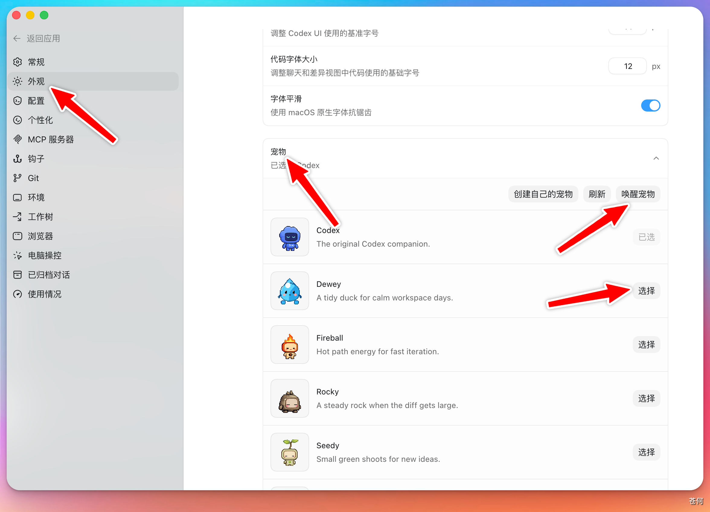

前段时间，Codex 新增了一个会陪你工作的桌面小宠物。它不只是一个装饰，还会把 Codex 当前在忙什么实际显示出来。
这个宠物最大的价值在于状态的可视化：
- 任务进度一目了然： 不用一直切换回 Codex 的界面，就能看到当前任务的进度。
- 实时状态反馈：
- 它会在 Codex 忙碌的时候显示忙碌的画面。
- 在需要你确认的时候会发出提醒。
- 任务完成之后，它也会让你知道可以去检查结果了。
1. 安装#
打开”设置” → “外观”，往下滑到”宠物”这一栏。在这里可以选择喜欢的宠物类型并点击”唤醒”，桌面上就会出现选定的小宠物了。

快捷命令方式： 如果不想进设置，也可以直接在聊天框中输入 /，选择”宠物”选项，同样可以唤醒或收起桌面宠物。

2. 使用#
唤醒之后，像平常一样下达指令，然后去做其他事情。小宠物会在屏幕上陪伴着你，实时显示任务完成进度。
比如下面这个情况：它正在进行搜索，并执行我们的任务。
任务完成之后，会显示一个绿色对勾，提示任务已完成。也就是说，我们可以实时看到它的执行过程以及完成结果，完全不需要盯着 Codex 窗口等待。